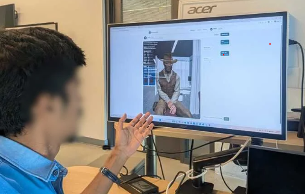
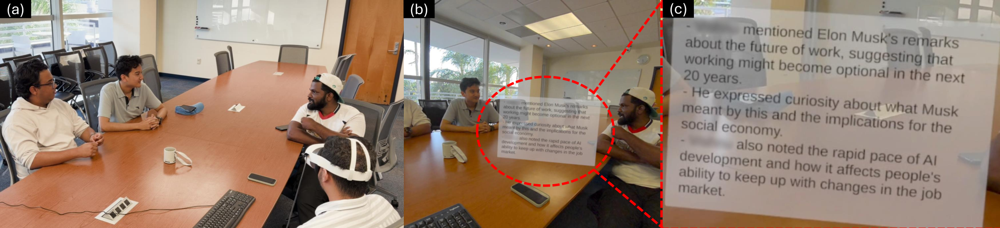
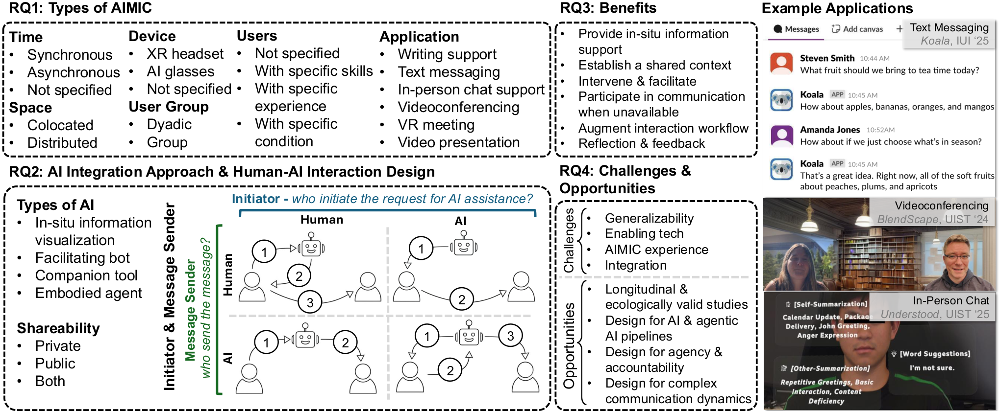

ChatMuse: Supporting In-Person Small-Group Conversation Experience with a Proactive Assistive AI Agent in Mixed Reality
Proceedings of the 39th Annual ACM Symposium on User Interface Software and Technology (UIST), 2026.

Research
Research on human–AI interaction, conversational agents, and XR systems.
Google ScholarProceedings of the 39th Annual ACM Symposium on User Interface Software and Technology (UIST), 2026.
Adjunct Proceedings of the 39th Annual ACM Symposium on User Interface Software and Technology, 2026.

Extended Abstracts of the CHI Conference on Human Factors in Computing Systems, 2026.

arXiv preprint, 2026.
